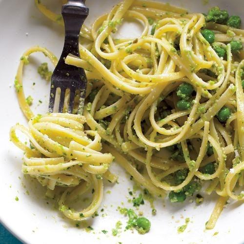

If you work up an appetite contemplating The 4 P's, here's a quick, easy solution where you can have your 4P's and eat them too! Bon apetit ~
The Four Ps: Peas, Parsley, Parmesan, Pasta

Photo credit: Everyday Food
Julia Bainbridge Food Editor May 9, 2014
Three Ps—peas, parsley, and Parmesan—can make another P: Pesto. Mix the pesto with pasta (P!), and you’ve got…a promising dinner. Alright, that was a stretch.
But peas! They’re in season now at their sweetest and overall best, so sub in fresh ones for frozen in this recipe. Instead of cooking them according the package instructions, as the recipe says, either blanch the fresh peas in boiling water or hit them with some quick heat in the sauté pan before pulsing them. Presto! (Okay, we’ll really stop now.)
Pea and Parsley Pesto with Linguine
by Everyday Food, serves 4
2 cups frozen peas (from a 10-ounce bag)
1 cup packed fresh parsley leaves
1/2 cup walnuts, toasted
2/3 cup grated Parmesan, plus more for serving
3 garlic cloves, smashed and peeled
1/3 cup extra-virgin olive oil
Coarse salt and ground pepper
12 ounces linguine
Cook 1 cup peas according to package instructions.
In a food processor, combine cooked peas, parsley, walnuts, Parmesan, garlic, and 1 tablespoon water. Pulse until a paste forms. With machine running, slowly add oil, processing until blended; season with salt and pepper.
In a large pot of boiling salted water, cook pasta according to package instructions, adding 1 cup peas 30 seconds before end of cooking.
Reserve 1 cup pasta water; drain pasta and peas. Return pasta and peas to pot; toss with 3/4 cup pesto (reserve remainder for another use), adding enough pasta water to create a sauce that coats pasta. Serve pasta with more Parmesan.